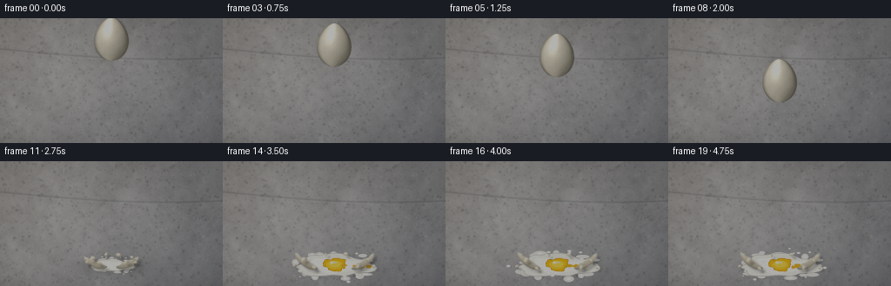
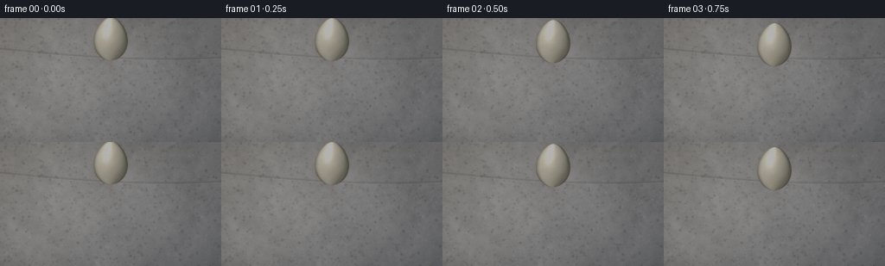
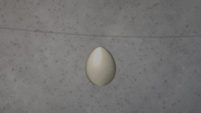
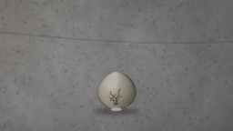
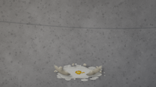
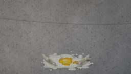
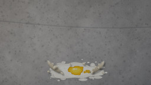
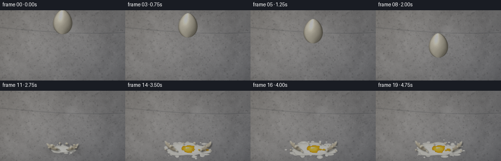
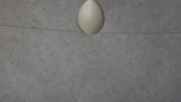

CODING AGENTS AS PIXEL WORLD MODELS
traex/DeepSeek-V4.1-Flash · material_0013
点击播放 · 原生 RGB 像素
逐轮保存的候选
回放视频、检查图与代码变化。
每份候选均可单独播放。实际图片检查记录在下方工具轨迹中。
候选 01播放与检查图
点击播放 · 原生 RGB 像素


展开代码变化
--- 上一保存版本
+++ 本次保存版本
@@ -0,0 +1,706 @@
+from pathlib import Path
+import math
+
+import cv2
+import numpy as np
+from PIL import Image, ImageDraw
+
+import artifact_io
+
+
+WIDTH = 256
+HEIGHT = 144
+FRAMES = 20
+FPS = 4.0
+SS = 4
+OW = WIDTH * SS
+OH = HEIGHT * SS
+
+IMPACT_X = 128.0
+FLOOR_Y = 120.0
+CONTACT_CENTER_Y = 99.0
+START_CENTER_Y = 24.0
+EGG_RX = 21.0
+EGG_RY = 25.0
+
+
+def smoothstep(edge0, edge1, value):
+ t = np.clip((value - edge0) / (edge1 - edge0), 0.0, 1.0)
+ return t * t * (3.0 - 2.0 * t)
+
+
+def resize_noise(rng, shape, cells):
+ h, w = shape
+ small = rng.random((max(2, int(h / cells)), max(2, int(w / cells)))).astype(np.float32)
+ return cv2.resize(small, (w, h), interpolation=cv2.INTER_CUBIC)
+
+
+def fbm(rng, shape, base_cells):
+ total = np.zeros(shape, dtype=np.float32)
+ weight = 0.0
+ cells = float(base_cells)
+ for index, amount in enumerate((0.52, 0.27, 0.14, 0.07)):
+ total += amount * resize_noise(rng, shape, cells)
+ cells = max(2.0, cells / 2.6)
+ weight += amount
+ return total / weight
+
+
+def make_concrete():
+ rng = np.random.default_rng(7319)
+ yy, xx = np.mgrid[0:OH, 0:OW].astype(np.float32)
+ u = xx / OW
+ v = yy / OH
+
+ coarse = fbm(rng, (OH, OW), 105.0)
+ medium = fbm(rng, (OH, OW), 24.0)
+ fine = rng.normal(0.0, 1.0, (OH, OW)).astype(np.float32)
+ fine = cv2.GaussianBlur(fine, (0, 0), 0.55 * SS)
+ broom = np.sin(xx * 0.017 + yy * 0.004 + coarse * 5.0) * 0.5 + 0.5
+
+ value = 0.545
+ value += (coarse - 0.5) * 0.105
+ value += (medium - 0.5) * 0.072
+ value += (broom - 0.5) * 0.018
+ value += fine * 0.018
+
+ light = np.clip(1.08 - 0.23 * u + 0.08 * (1.0 - v), 0.68, 1.10)
+ value *= light
+ warm = np.clip((1.0 - u) * 0.026 + (1.0 - v) * 0.014, 0.0, 0.04)
+ cool = np.clip(u * 0.018 + v * 0.010, 0.0, 0.03)
+
+ concrete = np.stack(
+ (
+ value + warm - cool * 0.35,
+ value + warm * 0.45 - cool * 0.15,
+ value - warm * 0.20 + cool * 0.55,
+ ),
+ axis=-1,
+ )
+
+ # A shallow, out-of-focus slab seam keeps the floor from reading as a flat wall.
+ seam_y = 0.245 * OH + 12.0 * SS * np.sin(xx / OW * 2.1)
+ seam = np.exp(-((yy - seam_y) / (1.15 * SS)) ** 2)
+ concrete *= (1.0 - seam[..., None] * np.array([0.16, 0.15, 0.14]))
+ seam_light = np.exp(-((yy - seam_y - 1.7 * SS) / (0.65 * SS)) ** 2)
+ concrete += seam_light[..., None] * np.array([0.028, 0.026, 0.022])
+
+ # Fine aggregate, pores, and a few faint trowel scratches.
+ overlay = Image.new("RGBA", (OW, OH), (0, 0, 0, 0))
+ draw = ImageDraw.Draw(overlay)
+ for _ in range(950):
+ x = int(rng.integers(0, OW))
+ y = int(rng.integers(0, OH))
+ radius = float(rng.uniform(0.45, 1.7)) * SS
+ tone = int(rng.integers(18, 75))
+ alpha = int(rng.integers(18, 55))
+ draw.ellipse((x - radius, y - radius, x + radius, y + radius), fill=(tone, tone, tone, alpha))
+ for _ in range(360):
+ x = int(rng.integers(0, OW))
+ y = int(rng.integers(0, OH))
+ radius = float(rng.uniform(0.45, 1.4)) * SS
+ tone = int(rng.integers(180, 235))
+ alpha = int(rng.integers(10, 32))
+ draw.ellipse((x - radius, y - radius, x + radius, y + radius), fill=(tone, tone - 3, tone - 8, alpha))
+ for _ in range(18):
+ x0 = float(rng.uniform(-30, OW))
+ y0 = float(rng.uniform(0, OH))
+ length = float(rng.uniform(20, 95)) * SS
+ draw.line(
+ (x0, y0, x0 + length, y0 + float(rng.uniform(-8, 8)) * SS),
+ fill=(205, 204, 198, int(rng.integers(7, 18))),
+ width=max(1, int(SS * 0.45)),
+ )
+ concrete = composite_rgba(concrete, np.asarray(overlay, dtype=np.float32) / 255.0)
+
+ # Soft illumination and edge falloff.
+ glow = np.exp(-(((u - 0.42) / 0.53) ** 2 + ((v - 0.62) / 0.70) ** 2))
+ concrete *= (0.91 + 0.10 * glow)[..., None]
+ radius2 = (u - 0.5) ** 2 * 1.05 + (v - 0.51) ** 2 * 1.45
+ vignette = np.clip(1.0 - 0.34 * radius2, 0.58, 1.0)
+ concrete *= vignette[..., None]
+
+ return np.clip(concrete, 0.0, 1.0).astype(np.float32)
+
+
+def composite_rgba(canvas, rgba):
+ alpha = rgba[..., 3:4]
+ return canvas * (1.0 - alpha) + rgba[..., :3] * alpha
+
+
+def paste_rgba(canvas, tile, left, top):
+ h, w = tile.shape[:2]
+ x0 = int(round(left))
+ y0 = int(round(top))
+ x1 = x0 + w
+ y1 = y0 + h
+ sx0 = max(0, -x0)
+ sy0 = max(0, -y0)
+ dx0 = max(0, x0)
+ dy0 = max(0, y0)
+ dx1 = min(canvas.shape[1], x1)
+ dy1 = min(canvas.shape[0], y1)
+ if dx1 <= dx0 or dy1 <= dy0:
+ return
+ sx1 = sx0 + dx1 - dx0
+ sy1 = sy0 + dy1 - dy0
+ piece = tile[sy0:sy1, sx0:sx1]
+ dst = canvas[dy0:dy1, dx0:dx1]
+ alpha = piece[..., 3:4]
+ dst[:] = dst * (1.0 - alpha) + piece[..., :3] * alpha
+
+
+def blurred_shadow(canvas, cx, cy, rx, ry, alpha, sigma, tint=(0.08, 0.075, 0.065)):
+ x0 = max(0, int(cx - rx - sigma * 3.0))
+ x1 = min(OW, int(cx + rx + sigma * 3.0))
+ y0 = max(0, int(cy - ry - sigma * 3.0))
+ y1 = min(OH, int(cy + ry + sigma * 3.0))
+ if x1 <= x0 or y1 <= y0:
+ return
+ local_h = y1 - y0
+ local_w = x1 - x0
+ mask = np.zeros((local_h, local_w), dtype=np.float32)
+ cv2.ellipse(
+ mask,
+ (int(cx - x0), int(cy - y0)),
+ (max(1, int(rx)), max(1, int(ry))),
+ 0,
+ 0,
+ 360,
+ 1.0,
+ -1,
+ cv2.LINE_AA,
+ )
+ mask = cv2.GaussianBlur(mask, (0, 0), max(0.8, sigma))
+ patch = canvas[y0:y1, x0:x1]
+ patch[:] = patch * (1.0 - mask[..., None] * alpha) + np.asarray(tint) * (mask[..., None] * alpha)
+
+
+def egg_parameters(frame_index):
+ acceleration = 2.0 * (CONTACT_CENTER_Y - START_CENTER_Y) / (2.5**2)
+ t = frame_index / FPS
+ return START_CENTER_Y + 0.5 * acceleration * t * t
+
+
+def make_egg_layer(cx, cy, rx, ry, angle, squash_x=1.0, squash_y=1.0):
+ margin = 12 * SS
+ left = int(math.floor(cx * SS - rx * SS * 1.45 - margin))
+ top = int(math.floor(cy * SS - ry * SS * 1.35 - margin))
+ right = int(math.ceil(cx * SS + rx * SS * 1.45 + margin))
+ bottom = int(math.ceil(cy * SS + ry * SS * 1.35 + margin))
+ h = bottom - top
+ w = right - left
+ yy, xx = np.mgrid[top:bottom, left:right].astype(np.float32)
+ dx = (xx - cx * SS) / SS
+ dy = (yy - cy * SS) / SS
+ ca = math.cos(angle)
+ sa = math.sin(angle)
+ xr = dx * ca + dy * sa
+ yr = -dx * sa + dy * ca
+
+ n = yr / (ry * squash_y)
+ inside_n = np.abs(n) < 1.0
+ sqrt_term = np.sqrt(np.clip(1.0 - n * n, 0.0, 1.0))
+ profile = 0.94 + 0.105 * n - 0.055 * n * n
+ half_width = rx * squash_x * sqrt_term * profile
+ qx = xr / np.maximum(half_width, 1e-5)
+ inside = inside_n & (np.abs(qx) < 1.0)
+
+ z = np.sqrt(np.clip(1.0 - qx * qx - 0.13 * n * n, 0.0, 1.0))
+ nx = np.clip(qx, -1.0, 1.0)
+ ny = np.clip(n * 0.60, -1.0, 1.0)
+ nz = np.maximum(z, 0.02)
+ norm = np.sqrt(nx * nx + ny * ny + nz * nz)
+ nx /= norm
+ ny /= norm
+ nz /= norm
+
+ # Rotate the surface normal back into screen space.
+ nx_screen = nx * ca - ny * sa
+ ny_screen = nx * sa + ny * ca
+ light = np.array([-0.43, -0.58, 0.69], dtype=np.float32)
+ light /= np.linalg.norm(light)
+ diffuse = np.clip(nx_screen * light[0] + ny_screen * light[1] + nz * light[2], 0.0, 1.0)
+
+ view = np.array([0.0, 0.0, 1.0], dtype=np.float32)
+ halfway = light + view
+ halfway /= np.linalg.norm(halfway)
+ spec_angle = np.clip(nx_screen * halfway[0] + ny_screen * halfway[1] + nz * halfway[2], 0.0, 1.0)
+ specular = spec_angle**26
+
+ shell = np.array([0.835, 0.795, 0.685], dtype=np.float32)
+ color = shell * (0.49 + 0.58 * diffuse[..., None])
+ color += np.array([0.095, 0.086, 0.070]) * (diffuse[..., None] ** 2)
+ color += specular[..., None] * np.array([0.46, 0.43, 0.35])
+
+ # Fine, attached speckling and subtle natural color variation.
+ mottling = 0.5 + 0.25 * np.sin(qx * 8.7 + n * 13.2) + 0.25 * np.sin(qx * 3.1 - n * 7.4 + 1.7)
+ color *= (0.975 + 0.035 * mottling)[..., None]
+ hash_value = np.sin(qx * 94.13 + n * 57.77 + 3.91) * 43758.5453
+ hash_value = hash_value - np.floor(hash_value)
+ flecks = smoothstep(0.965, 0.998, hash_value)
+ flecks = cv2.GaussianBlur(flecks.astype(np.float32), (0, 0), 0.42 * SS)
+ color = color * (1.0 - 0.32 * flecks[..., None]) + np.array([0.46, 0.37, 0.27]) * (0.32 * flecks[..., None])
+
+ # Edge darkening and a narrow reflected rim light.
+ edge = np.clip(1.0 - z * 1.55, 0.0, 0.65)
+ color *= (1.0 - edge[..., None] * 0.52)
+ left_rim = smoothstep(0.78, 0.98, -qx) * smoothstep(0.35, 0.92, z)
+ color += left_rim[..., None] * np.array([0.13, 0.115, 0.085])
+
+ alpha = inside.astype(np.float32)
+ alpha = cv2.GaussianBlur(alpha, (0, 0), 0.33 * SS)
+ rgba = np.dstack((np.clip(color, 0.0, 1.0), alpha))
+ return rgba, (left, top), (xx, yy, qx, n, inside, left - left, top - top)
+
+
+def draw_egg(canvas, cx, cy, rx, ry, angle=0.0, squash_x=1.0, squash_y=1.0, cracks=0):
+ tile, (left, top), _ = make_egg_layer(cx, cy, rx, ry, angle, squash_x, squash_y)
+ paste_rgba(canvas, tile, left, top)
+ if cracks:
+ draw_egg_cracks(canvas, cx, cy, rx, ry, angle, cracks)
+
+
+def draw_egg_cracks(canvas, cx, cy, rx, ry, angle, amount):
+ overlay = Image.new("RGBA", (OW, OH), (0, 0, 0, 0))
+ draw = ImageDraw.Draw(overlay)
+ rng = np.random.default_rng(441 + amount)
+ origin = np.array([cx * SS, (cy + ry * 0.73) * SS])
+ main_dirs = [(-0.45, -1.0), (-0.12, -1.0), (0.20, -1.0), (0.52, -1.0), (-0.78, -0.64)]
+ for index, direction in enumerate(main_dirs[: max(3, amount)]):
+ vec = np.array(direction, dtype=np.float32)
+ vec /= np.linalg.norm(vec)
+ length = rng.uniform(0.48, 0.88) * ry * SS
+ points = [tuple(origin)]
+ steps = 5
+ for step in range(1, steps + 1):
+ travel = length * step / steps
+ jitter = np.array([rng.uniform(-1.8, 1.8), rng.uniform(-0.8, 0.8)]) * SS
+ point = origin + vec * travel + jitter
+ points.append(tuple(point))
+ draw.line(points, fill=(76, 59, 45, 220), width=max(2, int(1.15 * SS)), joint="curve")
+ if index < 3:
+ branch_at = points[2 + index % 2]
+ side = -1.0 if index % 2 == 0 else 1.0
+ branch_end = (
+ branch_at[0] + side * rng.uniform(0.16, 0.32) * rx * SS,
+ branch_at[1] - rng.uniform(0.08, 0.22) * ry * SS,
+ )
+ draw.line((branch_at, branch_end), fill=(88, 67, 49, 190), width=max(1, int(0.72 * SS)))
+ # A chipped opening at the contact point.
+ chip = [
+ (origin[0] - 3.8 * SS, origin[1] - 0.5 * SS),
+ (origin[0] - 1.5 * SS, origin[1] + 1.5 * SS),
+ (origin[0] + 1.2 * SS, origin[1] + 0.9 * SS),
+ (origin[0] + 3.6 * SS, origin[1] - 1.1 * SS),
+ ]
+ draw.polygon(chip, fill=(66, 51, 39, 210))
+ canvas[:] = composite_rgba(canvas, np.asarray(overlay, dtype=np.float32) / 255.0)
+
+
+def make_puddle_layer(center_x, center_y, scale, yolk_scale, seed):
+ rng = np.random.default_rng(seed)
+ w = int(128 * SS)
+ h = int(56 * SS)
+ left = int(center_x * SS - w / 2)
+ top = int(center_y * SS - h / 2)
+ yy, xx = np.mgrid[0:h, 0:w].astype(np.float32)
+ cx = w * 0.5
+ cy = h * 0.49
+
+ rgba = np.zeros((h, w, 4), dtype=np.float32)
+
+ def blob_polygon(base_rx, base_ry, phase, count=72, wobble=0.18):
+ points = []
+ for i in range(count):
+ theta = 2.0 * math.pi * i / count
+ radial = (
+ 1.0
+ + 0.12 * math.sin(3.0 * theta + phase)
+ + 0.065 * math.sin(7.0 * theta - phase * 1.7)
+ + wobble * 0.10 * math.sin(11.0 * theta + phase * 0.6)
+ )
+ x = cx + math.cos(theta) * base_rx * radial
+ y = cy + math.sin(theta) * base_ry * radial
+ points.append((x, y))
+ return points
+
+ def draw_soft_blob(draw, points, fill, outline=None, width=1):
+ draw.polygon(points, fill=fill)
+ if outline is not None:
+ draw.line(points + [points[0]], fill=outline, width=width, joint="curve")
+
+ overlay = Image.new("RGBA", (w, h), (0, 0, 0, 0))
+ draw = ImageDraw.Draw(overlay)
+ main_rx = 43.0 * SS * scale
+ main_ry = 12.5 * SS * scale
+
+ # Thin albumen fingers reach beyond the main spill.
+ for i in range(13):
+ theta = i * 2.0 * math.pi / 13.0 + 0.21 * math.sin(i * 1.8)
+ dist = (38.0 + 9.0 * rng.random()) * SS * scale
+ px = cx + math.cos(theta) * dist
+ py = cy + math.sin(theta) * dist * 0.35
+ rw = (3.0 + 5.0 * rng.random()) * SS * scale
+ rh = (1.2 + 2.3 * rng.random()) * SS * scale
+ draw.ellipse((px - rw, py - rh, px + rw, py + rh), fill=(236, 234, 222, 205))
+ if rng.random() > 0.45:
+ draw.ellipse(
+ (px - rw * 0.42, py - rh * 0.42, px + rw * 0.42, py + rh * 0.42),
+ fill=(255, 254, 244, 220),
+ )
+
+ draw_soft_blob(
+ draw,
+ blob_polygon(main_rx, main_ry, 0.7),
+ (235, 233, 219, 238),
+ (183, 180, 168, 170),
+ max(1, int(0.8 * SS)),
+ )
+ draw_soft_blob(
+ draw,
+ blob_polygon(main_rx * 0.78, main_ry * 0.67, 2.0, wobble=0.8),
+ (249, 248, 237, 242),
+ )
+
+ # Small white splashes and reflective glints.
+ for _ in range(18):
+ theta = rng.uniform(0, 2.0 * math.pi)
+ dist = rng.uniform(22.0, 57.0) * SS * scale
+ px = cx + math.cos(theta) * dist
+ py = cy + math.sin(theta) * dist * 0.35
+ r = rng.uniform(0.8, 2.2) * SS * max(0.45, scale)
+ draw.ellipse((px - r, py - r * 0.55, px + r, py + r * 0.55), fill=(252, 250, 238, 215))
+
+ # Yolk: a glossy, slightly irregular dome.
+ if yolk_scale > 0.01:
+ yolk_rx = 12.5 * SS * yolk_scale
+ yolk_ry = 7.4 * SS * yolk_scale
+ yolk_cy = cy - 1.3 * SS * yolk_scale
+ yolk_points = blob_polygon(yolk_rx, yolk_ry, 3.8, count=64, wobble=0.4)
+ yolk_points = [(x, y + (yolk_cy - cy)) for x, y in yolk_points]
+ draw.polygon(yolk_points, fill=(236, 159, 12, 250))
+ draw.line(yolk_points + [yolk_points[0]], fill=(189, 111, 2, 235), width=max(1, int(0.9 * SS)))
+ draw.ellipse(
+ (
+ cx - yolk_rx * 0.78,
+ yolk_cy - yolk_ry * 0.62,
+ cx + yolk_rx * 0.72,
+ yolk_cy + yolk_ry * 0.72,
+ ),
+ fill=(248, 182, 30, 245),
+ )
+ draw.ellipse(
+ (
+ cx - yolk_rx * 0.54,
+ yolk_cy - yolk_ry * 0.54,
+ cx + yolk_rx * 0.53,
+ yolk_cy + yolk_ry * 0.40,
+ ),
+ fill=(252, 203, 47, 238),
+ )
+ draw.ellipse(
+ (
+ cx - yolk_rx * 0.45,
+ yolk_cy - yolk_ry * 0.48,
+ cx - yolk_rx * 0.10,
+ yolk_cy - yolk_ry * 0.12,
+ ),
+ fill=(255, 244, 173, 235),
+ )
+ draw.ellipse(
+ (
+ cx - yolk_rx * 0.08,
+ yolk_cy - yolk_ry * 0.40,
+ cx + yolk_rx * 0.17,
+ yolk_cy - yolk_ry * 0.18,
+ ),
+ fill=(255, 253, 220, 180),
+ )
+
+ # Broken-yolk streaks pulled along the floor.
+ for i in range(6):
+ theta = (i - 2.5) * 0.42
+ px = cx + math.cos(theta) * rng.uniform(18.0, 40.0) * SS * yolk_scale
+ py = cy + rng.uniform(-1.2, 2.5) * SS * yolk_scale
+ rw = rng.uniform(1.5, 4.5) * SS * yolk_scale
+ rh = rng.uniform(0.7, 2.0) * SS * yolk_scale
+ draw.ellipse((px - rw, py - rh, px + rw, py + rh), fill=(230, 151, 9, 220))
+
+ rgba[:] = np.asarray(overlay, dtype=np.float32) / 255.0
+ return rgba, (left, top)
+
+
+def make_shard_tile(width, height, angle, seed, kind="cap", flip=False):
+ rng = np.random.default_rng(seed)
+ pad = int(7 * SS)
+ tile_w = int(width * SS + pad * 2)
+ tile_h = int(height * SS + pad * 2)
+ yy, xx = np.mgrid[0:tile_h, 0:tile_w].astype(np.float32)
+ cx = tile_w * 0.5
+ cy = tile_h * 0.53
+ rx = width * SS * 0.50
+ ry = height * SS * 0.52
+
+ if kind == "cap":
+ outer = []
+ for i in range(29):
+ theta = math.pi * i / 28.0
+ jitter = 1.0 + 0.025 * math.sin(i * 3.4 + seed)
+ outer.append((cx + math.cos(theta) * rx * jitter, cy + math.sin(theta) * ry * jitter))
+ jagged = [
+ (cx + rx * 0.76, cy + 0.5 * SS),
+ (cx + rx * 0.42, cy - 1.2 * SS),
+ (cx + rx * 0.13, cy + 0.8 * SS),
+ (cx - rx * 0.18, cy - 0.7 * SS),
+ (cx - rx * 0.47, cy + 1.1 * SS),
+ (cx - rx * 0.78, cy + 0.1 * SS),
+ ]
+ points = outer + jagged
+ else:
+ points = []
+ sides = 8
+ for i in range(sides):
+ theta = 2.0 * math.pi * i / sides
+ radial = 0.82 + 0.16 * math.sin(i * 2.7 + seed)
+ points.append((cx + math.cos(theta) * rx * radial, cy + math.sin(theta) * ry * radial))
+
+ mask_img = Image.new("L", (tile_w, tile_h), 0)
+ mask_draw = ImageDraw.Draw(mask_img)
+ mask_draw.polygon(points, fill=255)
+ mask = np.asarray(mask_img, dtype=np.float32) / 255.0
+ mask = cv2.GaussianBlur(mask, (0, 0), 0.28 * SS)
+
+ local_x = (xx - cx) / max(rx, 1.0)
+ local_y = (yy - cy) / max(ry, 1.0)
+ rim = np.exp(-((np.sqrt(local_x * local_x + local_y * local_y) - 1.0) / 0.15) ** 2)
+ shade = np.clip(0.92 - 0.20 * local_x - 0.26 * local_y, 0.55, 1.14)
+ base = np.stack(
+ (
+ np.full_like(xx, 0.84) * shade,
+ np.full_like(xx, 0.80) * shade,
+ np.full_like(xx, 0.69) * shade,
+ ),
+ axis=-1,
+ )
+ base += (1.0 - rim)[..., None] * np.array([0.025, 0.022, 0.015])
+ base -= rim[..., None] * np.array([0.16, 0.14, 0.10])
+
+ # Mottled shell interior near the jagged edge.
+ inner = np.clip((local_y + 0.20) * 1.25, 0.0, 1.0) * (np.abs(local_x) < 0.78)
+ base = base * (1.0 - 0.20 * inner[..., None]) + np.array([0.57, 0.48, 0.36]) * (0.20 * inner[..., None])
+
+ # A restrained dusting of brown shell pores.
+ spots = np.zeros((tile_h, tile_w), dtype=np.float32)
+ for _ in range(max(4, int(width * height / 18))):
+ px = int(rng.uniform(cx - rx * 0.75, cx + rx * 0.75))
+ py = int(rng.uniform(cy - ry * 0.55, cy + ry * 0.65))
+ rr = max(1, int(rng.uniform(0.35, 0.8) * SS))
+ cv2.circle(spots, (px, py), rr, float(rng.uniform(0.25, 0.75)), -1, cv2.LINE_AA)
+ spots = cv2.GaussianBlur(spots, (0, 0), 0.3 * SS)
+ base = base * (1.0 - 0.24 * spots[..., None]) + np.array([0.40, 0.31, 0.23]) * (0.24 * spots[..., None])
+
+ rgba = np.dstack((np.clip(base, 0.0, 1.0), mask))
+ if flip:
+ rgba = rgba[:, ::-1]
+ matrix = cv2.getRotationMatrix2D((rgba.shape[1] * 0.5, rgba.shape[0] * 0.5), angle, 1.0)
+ rgba = cv2.warpAffine(
+ rgba,
+ matrix,
+ (rgba.shape[1], rgba.shape[0]),
+ flags=cv2.INTER_LINEAR,
+ borderMode=cv2.BORDER_CONSTANT,
+ borderValue=(0, 0, 0, 0),
+ )
+ return rgba.astype(np.float32)
+
+
+def draw_shard(canvas, cx, cy, width, height, angle, seed, kind="cap", flip=False, shadow=True):
+ tile = make_shard_tile(width, height, angle, seed, kind, flip)
+ left = int(cx * SS - tile.shape[1] * 0.5)
+ top = int(cy * SS - tile.shape[0] * 0.52)
+ if shadow:
+ mask = tile[..., 3]
+ shadow = np.zeros_like(mask)
+ shift = max(1, int(1.5 * SS))
+ shadow[shift:, shift:] = mask[:-shift, :-shift]
+ shadow = cv2.GaussianBlur(shadow, (0, 0), 1.0 * SS)
+ shadow_rgba = np.zeros((*shadow.shape, 4), dtype=np.float32)
+ shadow_rgba[..., :3] = np.array([0.09, 0.085, 0.075])
+ shadow_rgba[..., 3] = shadow * 0.34
+ paste_rgba(canvas, shadow_rgba, left + 2 * SS, top + 2 * SS)
+ paste_rgba(canvas, tile, left, top)
+
+
+def draw_dust(canvas, frame_index):
+ if frame_index < 10 or frame_index > 13:
+ return
+ age = frame_index - 10
+ rng = np.random.default_rng(872 + frame_index)
+ overlay = Image.new("RGBA", (OW, OH), (0, 0, 0, 0))
+ draw = ImageDraw.Draw(overlay)
+ for i in range(28 - age * 5):
+ side = -1.0 if i % 2 == 0 else 1.0
+ x = (IMPACT_X + side * (8.0 + 12.0 * rng.random() + age * 5.0)) * SS
+ y = (FLOOR_Y - rng.uniform(0.5, 6.0) - age * rng.uniform(0.2, 1.5)) * SS
+ radius = rng.uniform(0.35, 1.2) * SS
+ alpha = int(max(18, 95 - age * 20) * rng.uniform(0.45, 1.0))
+ draw.ellipse((x - radius, y - radius, x + radius, y + radius), fill=(151, 148, 137, alpha))
+ overlay = np.asarray(overlay, dtype=np.float32) / 255.0
+ canvas[:] = composite_rgba(canvas, overlay)
+
+
+def render_frame(background, frame_index):
+ canvas = background.copy()
+ if frame_index < 10:
+ cy = egg_parameters(frame_index)
+ height_above_floor = max(0.0, FLOOR_Y - (cy + EGG_RY))
+ shadow_alpha = 0.11 + 0.21 * (1.0 - min(1.0, height_above_floor / 78.0))
+ shadow_rx = (12.0 + height_above_floor * 0.10) * SS
+ shadow_ry = (2.5 + height_above_floor * 0.030) * SS
+ shadow_x = (IMPACT_X + height_above_floor * 0.13) * SS
+ shadow_y = (FLOOR_Y + 1.4 + height_above_floor * 0.008) * SS
+ blurred_shadow(
+ canvas,
+ shadow_x,
+ shadow_y,
+ shadow_rx,
+ shadow_ry,
+ shadow_alpha,
+ (7.0 + height_above_floor * 0.15) * SS,
+ )
+ angle = math.radians(1.8 * math.sin(frame_index * 0.42 + 0.4))
+ draw_egg(canvas, IMPACT_X, cy, EGG_RX, EGG_RY, angle)
+ return canvas
+
+ if frame_index == 10:
+ # The shell is compressed at the contact point and the first crack network opens.
+ blurred_shadow(
+ canvas,
+ IMPACT_X * SS,
+ (FLOOR_Y + 2.2) * SS,
+ 25.0 * SS,
+ 4.8 * SS,
+ 0.43,
+ 2.2 * SS,
+ )
+ draw_egg(canvas, IMPACT_X, 99.3, EGG_RX * 1.10, EGG_RY * 0.82, 0.0, cracks=5)
+ # A thin bead of albumen escapes at the bottom.
+ overlay = Image.new("RGBA", (OW, OH), (0, 0, 0, 0))
+ draw = ImageDraw.Draw(overlay)
+ draw.ellipse(
+ ((IMPACT_X - 6.2) * SS, (FLOOR_Y - 1.4) * SS, (IMPACT_X + 5.7) * SS, (FLOOR_Y + 1.9) * SS),
+ fill=(239, 237, 222, 215),
+ )
+ canvas[:] = composite_rgba(canvas, np.asarray(overlay, dtype=np.float32) / 255.0)
+ draw_dust(canvas, frame_index)
+ return canvas
+
+ # After impact: puddle, shell halves, and smaller fragments spread over the concrete.
+ progress = min(1.0, (frame_index - 10) / 5.0)
+ eased = 1.0 - (1.0 - progress) ** 2.6
+ puddle_scale = 0.18 + 0.84 * eased
+ yolk_scale = max(0.0, min(1.0, (frame_index - 11) / 2.8))
+
+ blurred_shadow(
+ canvas,
+ (IMPACT_X + 1.5) * SS,
+ (FLOOR_Y + 2.2) * SS,
+ (40.0 + 7.0 * eased) * SS,
+ (9.0 + 1.0 * eased) * SS,
+ 0.17,
+ 4.0 * SS,
+ )
+ puddle, (pleft, ptop) = make_puddle_layer(
+ IMPACT_X + 0.8,
+ FLOOR_Y + 1.2,
+ puddle_scale,
+ yolk_scale,
+ 991 + min(frame_index, 17),
+ )
+ paste_rgba(canvas, puddle, pleft, ptop)
+
+ spread = 4.0 + 39.0 * eased
+ lift = (1.0 - progress) * 7.0
+ left_x = IMPACT_X - 4.5 - spread * 0.62
+ right_x = IMPACT_X + 4.0 + spread * 0.66
+ left_y = FLOOR_Y - 6.0 + lift * 0.25
+ right_y = FLOOR_Y - 5.4 + lift * 0.20
+ left_angle = -15.0 - 21.0 * eased
+ right_angle = 17.0 + 18.0 * eased
+ draw_shard(
+ canvas,
+ left_x,
+ left_y,
+ 27.0 + 5.0 * eased,
+ 13.0 + 1.5 * eased,
+ left_angle,
+ 1301,
+ "cap",
+ False,
+ )
+ draw_shard(
+ canvas,
+ right_x,
+ right_y,
+ 26.0 + 5.0 * eased,
+ 12.5 + 1.5 * eased,
+ right_angle,
+ 1302,
+ "cap",
+ True,
+ )
+
+ # Smaller shell chips fan outward, slowing as they settle.
+ fragment_specs = [
+ (-35, -3, 8.5, 5.5, 28, 5),
+ (-23, 7, 6.0, 4.3, -38, 9),
+ (-10, -8, 5.2, 3.8, 72, 13),
+ (14, -9, 6.8, 4.6, -18, 18),
+ (28, 5, 7.2, 4.8, 44, 23),
+ (39, -2, 5.0, 3.6, -62, 28),
+ (-46, 4, 4.7, 3.4, 15, 33),
+ (46, 6, 4.2, 3.2, -29, 38),
+ ]
+ for idx, (dx, dy, w, h, angle, seed) in enumerate(fragment_specs):
+ factor = 0.30 + 0.70 * eased
+ x = IMPACT_X + dx * factor
+ y = FLOOR_Y - 3.0 + dy * factor - (1.0 - progress) * (4.0 + idx % 3)
+ draw_shard(
+ canvas,
+ x,
+ y,
+ w,
+ h,
+ angle * (0.45 + 0.55 * eased),
+ seed,
+ "chip",
+ False,
+ )
+
+ draw_dust(canvas, frame_index)
+ return canvas
+
+
+def main():
+ case_dir = Path(__file__).resolve().parent
+ background = make_concrete()
+ frames = []
+ for frame_index in range(FRAMES):
+ high_res = render_frame(background, frame_index)
+ resized = cv2.resize(high_res, (WIDTH, HEIGHT), interpolation=cv2.INTER_AREA)
+ # Gentle highlight roll-off and a whisper of final sensor grain.
+ resized = np.clip(resized, 0.0, 1.0)
+ resized = 1.0 - np.exp(-resized * 1.16)
+ resized = np.clip(resized, 0.0, 1.0) ** (1.0 / 1.05)
+ rng = np.random.default_rng(5000 + frame_index)
+ grain = rng.normal(0.0, 0.0045, resized.shape[:2]).astype(np.float32)
+ resized += grain[..., None]
+ frames.append(np.clip(resized * 255.0, 0, 255).round().astype(np.uint8))
+ frames = np.stack(frames, axis=0)
+ artifact_io.save(frames, case_dir)
+ print(f"wrote {len(frames)} frames to {case_dir}")
+
+
+if __name__ == "__main__":
+ main()
候选 02播放与检查图
点击播放 · 原生 RGB 像素

展开代码变化
--- 上一保存版本
+++ 本次保存版本
@@ -444,17 +444,21 @@
if kind == "cap":
outer = []
- for i in range(29):
- theta = math.pi * i / 28.0
- jitter = 1.0 + 0.025 * math.sin(i * 3.4 + seed)
+ for i in range(33):
+ theta = math.pi * i / 32.0
+ jitter = 1.0 + 0.030 * math.sin(i * 3.4 + seed) + 0.012 * math.sin(i * 7.1 + seed * 0.3)
outer.append((cx + math.cos(theta) * rx * jitter, cy + math.sin(theta) * ry * jitter))
jagged = [
- (cx + rx * 0.76, cy + 0.5 * SS),
- (cx + rx * 0.42, cy - 1.2 * SS),
- (cx + rx * 0.13, cy + 0.8 * SS),
- (cx - rx * 0.18, cy - 0.7 * SS),
- (cx - rx * 0.47, cy + 1.1 * SS),
- (cx - rx * 0.78, cy + 0.1 * SS),
+ (cx + rx * 0.84, cy - 0.2 * SS),
+ (cx + rx * 0.67, cy + 2.2 * SS),
+ (cx + rx * 0.49, cy - 1.8 * SS),
+ (cx + rx * 0.31, cy + 1.5 * SS),
+ (cx + rx * 0.09, cy - 2.7 * SS),
+ (cx - rx * 0.16, cy + 2.4 * SS),
+ (cx - rx * 0.37, cy - 2.0 * SS),
+ (cx - rx * 0.59, cy + 1.7 * SS),
+ (cx - rx * 0.78, cy - 0.4 * SS),
+ (cx - rx * 0.88, cy + 0.6 * SS),
]
points = outer + jagged
else:
@@ -474,7 +478,10 @@
local_x = (xx - cx) / max(rx, 1.0)
local_y = (yy - cy) / max(ry, 1.0)
rim = np.exp(-((np.sqrt(local_x * local_x + local_y * local_y) - 1.0) / 0.15) ** 2)
- shade = np.clip(0.92 - 0.20 * local_x - 0.26 * local_y, 0.55, 1.14)
+ shade = np.clip(0.95 - 0.25 * local_x - 0.34 * local_y, 0.50, 1.16)
+ # The crown catches the key light; the fractured lower lip turns into shadow.
+ dome = np.exp(-(local_x * local_x * 1.35 + (local_y + 0.20) ** 2 * 1.9) * 1.2)
+ shade += dome * 0.12
base = np.stack(
(
np.full_like(xx, 0.84) * shade,
@@ -486,9 +493,12 @@
base += (1.0 - rim)[..., None] * np.array([0.025, 0.022, 0.015])
base -= rim[..., None] * np.array([0.16, 0.14, 0.10])
- # Mottled shell interior near the jagged edge.
- inner = np.clip((local_y + 0.20) * 1.25, 0.0, 1.0) * (np.abs(local_x) < 0.78)
- base = base * (1.0 - 0.20 * inner[..., None]) + np.array([0.57, 0.48, 0.36]) * (0.20 * inner[..., None])
+ # A narrow shell cross-section and the membrane interior sit along the break.
+ inner = smoothstep(-0.20, 0.24, local_y) * smoothstep(0.92, 0.55, np.abs(local_x))
+ inner *= smoothstep(-0.84, -0.58, local_y)
+ base = base * (1.0 - 0.29 * inner[..., None]) + np.array([0.56, 0.47, 0.34]) * (0.29 * inner[..., None])
+ broken_lip = np.exp(-((local_y - 0.12) / 0.105) ** 2) * smoothstep(0.90, 0.62, np.abs(local_x))
+ base = base * (1.0 - 0.40 * broken_lip[..., None]) + np.array([0.66, 0.59, 0.46]) * (0.40 * broken_lip[..., None])
# A restrained dusting of brown shell pores.
spots = np.zeros((tile_h, tile_w), dtype=np.float32)
@@ -499,6 +509,24 @@
cv2.circle(spots, (px, py), rr, float(rng.uniform(0.25, 0.75)), -1, cv2.LINE_AA)
spots = cv2.GaussianBlur(spots, (0, 0), 0.3 * SS)
base = base * (1.0 - 0.24 * spots[..., None]) + np.array([0.40, 0.31, 0.23]) * (0.24 * spots[..., None])
+
+ # Hairline cracks continue the fracture pattern into the surviving shell.
+ crack_overlay = Image.new("RGBA", (tile_w, tile_h), (0, 0, 0, 0))
+ crack_draw = ImageDraw.Draw(crack_overlay)
+ for i in range(3):
+ start_x = cx + (-0.42 + 0.34 * i) * rx
+ start_y = cy - 0.18 * ry + rng.uniform(-0.10, 0.10) * ry
+ points = [(start_x, start_y)]
+ for step in range(1, 5):
+ points.append(
+ (
+ start_x + rng.uniform(-0.10, 0.08) * rx * step * 0.55,
+ start_y - (0.055 + rng.uniform(0.005, 0.030)) * ry * step,
+ )
+ )
+ crack_draw.line(points, fill=(85, 67, 48, 170), width=max(1, int(0.48 * SS)), joint="curve")
+ crack_alpha = np.asarray(crack_overlay, dtype=np.float32) / 255.0
+ base = base * (1.0 - crack_alpha[..., 3:4] * 0.72) + crack_alpha[..., :3] * (crack_alpha[..., 3:4] * 0.72)
rgba = np.dstack((np.clip(base, 0.0, 1.0), mask))
if flip:
@@ -522,13 +550,13 @@
if shadow:
mask = tile[..., 3]
shadow = np.zeros_like(mask)
- shift = max(1, int(1.5 * SS))
+ shift = max(1, int(1.1 * SS))
shadow[shift:, shift:] = mask[:-shift, :-shift]
- shadow = cv2.GaussianBlur(shadow, (0, 0), 1.0 * SS)
+ shadow = cv2.GaussianBlur(shadow, (0, 0), 0.75 * SS)
shadow_rgba = np.zeros((*shadow.shape, 4), dtype=np.float32)
shadow_rgba[..., :3] = np.array([0.09, 0.085, 0.075])
- shadow_rgba[..., 3] = shadow * 0.34
- paste_rgba(canvas, shadow_rgba, left + 2 * SS, top + 2 * SS)
+ shadow_rgba[..., 3] = shadow * 0.45
+ paste_rgba(canvas, shadow_rgba, left + 1.3 * SS, top + 1.4 * SS)
paste_rgba(canvas, tile, left, top)
@@ -620,14 +648,14 @@
)
paste_rgba(canvas, puddle, pleft, ptop)
- spread = 4.0 + 39.0 * eased
+ spread = 4.0 + 43.0 * eased
lift = (1.0 - progress) * 7.0
left_x = IMPACT_X - 4.5 - spread * 0.62
right_x = IMPACT_X + 4.0 + spread * 0.66
- left_y = FLOOR_Y - 6.0 + lift * 0.25
- right_y = FLOOR_Y - 5.4 + lift * 0.20
- left_angle = -15.0 - 21.0 * eased
- right_angle = 17.0 + 18.0 * eased
+ left_y = FLOOR_Y - 8.0 + lift * 0.25
+ right_y = FLOOR_Y - 7.3 + lift * 0.20
+ left_angle = -14.0 - 24.0 * eased
+ right_angle = 16.0 + 21.0 * eased
draw_shard(
canvas,
left_x,
可观测工具轨迹
实际执行的命令与返回图片。
命令 1exit 0
/bin/bash -c "sed -n '1,240p' prompt.txt"
命令 2exit 0
/bin/bash -c "sed -n '1,280p' GENERATION_RULES.md"
命令 3exit 0
/bin/bash -c 'cat task_spec.json'
命令 4exit 0
/bin/bash -c "printf '%s\\n' '--- files ---'; find . -maxdepth 2 -type f -printf '%p %s bytes\\n' | sort; printf '%s\\n' '--- binaries ---'; command -v ffmpeg; command -v ffprobe; command -v python3; python3 - <<'PY' mods=['torch','diffusers','cv2','PIL','numpy','imageio','moviepy','matplotlib'] for m in mods: try: x=__import__(m); print(m, getattr(x,'__version__','ok')) except Exception as e: print(m, 'MISSING', type(e).__name__) PY"
命令 5exit 0
/bin/bash -c "sed -n '1,260p' artifact_io.py"
命令 6exit 0
/bin/bash -c "sed -n '1,260p' player_template.html"
命令 7exit 0
/bin/bash -c 'MPLCONFIGDIR="$PWD/.tmp/mpl" python3 generate.py'
命令 8exit 0
/bin/bash -c "find . -maxdepth 2 -type f -printf '%p %s bytes\\n' | sort | sed -n '1,100p'; python3 - <<'PY'
import numpy as np, json
from PIL import Image
z=np.load('pixels.npz')['pixels']
print('pixels', z.shape, z.dtype, int(z.min()), int(z.max()))
print('frames', len(list(__import__('pathlib').Path('frames').glob('*.png'))))
print('html bytes', __import__('pathlib').Path('index.html').stat().st_size)
PY"命令 9exit 0
/bin/bash -c 'mkdir -p .tmp/candidate_01 && cp -a frames pixels.npz inspection.png transition_check.png index.html .tmp/candidate_01/'
命令 10exit 0
/bin/bash -c 'MPLCONFIGDIR="$PWD/.tmp/mpl" python3 generate.py'
命令 11exit 0
/bin/bash -c 'python3 -m py_compile generate.py artifact_io.py'
命令 12exit 0
/bin/bash -c 'du -sh .; find frames -type f | wc -l; ls -lh generate.py pixels.npz index.html inspection.png transition_check.png'
命令 13exit 0
/bin/bash -c "python3 - <<'PY'
import json
from pathlib import Path
import numpy as np
from PIL import Image
spec=json.loads(Path('task_spec.json').read_text())
z=np.load('pixels.npz')['pixels']
assert z.shape == (spec['height'],spec['width'],spec['frames'])
assert z.dtype == np.uint32
files=sorted(Path('frames').glob('*.png'))
assert len(files)==spec['frames']
for i,p in enumerate(files):
im=Image.open(p)
assert im.size==(spec['width'],spec['height']) and im.mode=='RGB', (p,im.size,im.mode)
assert np.array_equal(np.asarray(im), np.stack([(z[:,:,i]>>16)&255,(z[:,:,i]>>8)&255,z[:,:,i]&255],axis=-1))
assert Path('index.html').stat().st_size > 1000000
print('validated:', len(files), 'RGB frames at', spec['width'], 'x', spec['height'], 'and', spec['fps'], 'fps')
print('pixel range:', int(z.min()), int(z.max()), 'html:', Path('index.html').stat().st_size, 'bytes')
PY"命令 14exit 0
/bin/bash -c 'git status --short 2>/dev/null || true'
视觉工具实际返回图片 1

视觉工具实际返回图片 2

视觉工具实际返回图片 3

视觉工具实际返回图片 4

视觉工具实际返回图片 5

视觉工具实际返回图片 6

视觉工具实际返回图片 7

视觉工具实际返回图片 8

视觉工具实际返回图片 9

保存候选 2 份；完成命令 14 次；可验证图片返回 9 张。原始 API 响应与完整日志保留在本地。